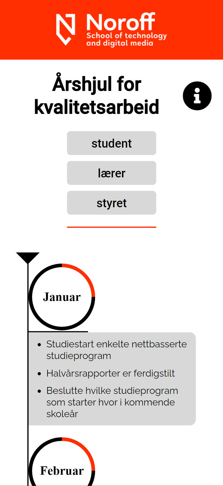
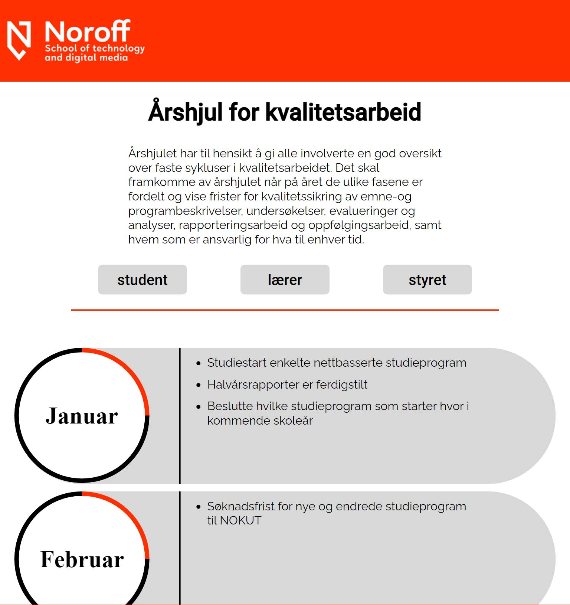
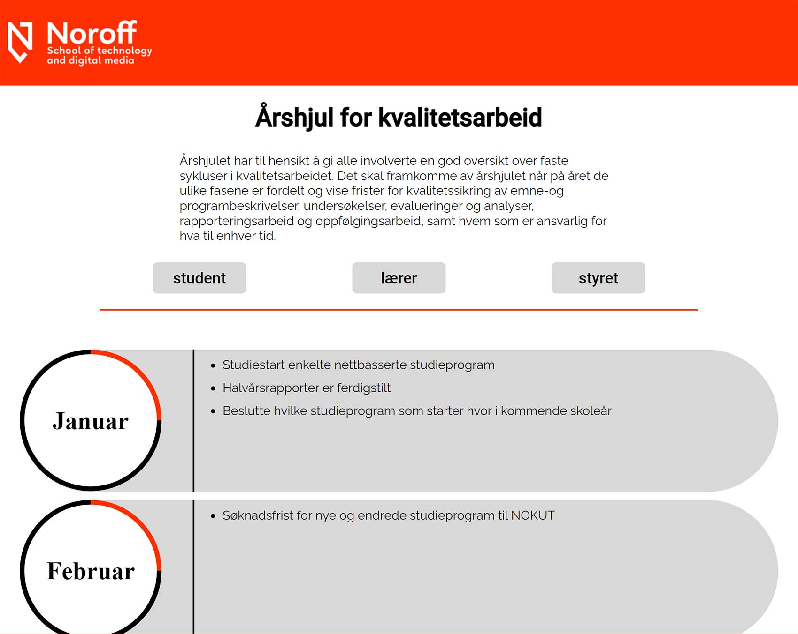

How it looks
Here is some screenshots you can look at of how the page looks on diffrent screen sizes, as well as get a feeling of how it is.
Mobile devices
content is displayed in a single column, so there is not too much being shown at once.
Tablet and medium sized devices
Room for more content. easy to see what content is grouped.
Laptop and desktop
The page is kept simple, so there is little need to change between the bigger sizes.
